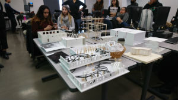
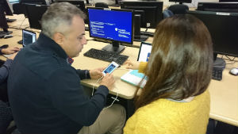

Students Settle In - 0:00 to 0:10
Students arrive to class, find their seats and get ready for class.

Class Introduction - 0:10 to 0:30
George introduces goals for today's class and reviews some class reminders for upcoming dates.
- Students were well aware of the agenda for the class
Keywords: certainty - Important dates were discussed
Keywords: fairness - All class files were posted in Blackbaord ahead of class
Keywords: fairness, certainty, technology
Class Introduction - 0:10 to 0:20
Marcin introduces class goals and objectives for today's class.
- Students were well aware of the agenda for the class
Keywords: certainty - Class agenda was projected and ckeced off as class progressed
Keywords: certainty - Marcin discussed his involvement with architecture outdie of the classroom
Keywords: relatedness

Assignment Review - 0:20 to 0:50
Marcin reviews previously handed in assignments and discusses what made them good.
- Completed assignments are showcased and complimented
Keywords: status, transmission - Marcin uses Google Images to apply concepts from assignments to real life architecture
Keywords: relatedness, status, technology

Project Review Round One - 0:30 to 1:40
George reviewed the expectaions for the first major project.
- Project samples were reviewed
Keywords: status, transmission - Aspects of real-life application were discussed
Keywords: relatedness - Expectations were discussed
Keywords: fairness
Presentations Round One - 0:50 to 1:40

Students present their thesis assignments.
- Thesis project was to create an architecture concept
Keywords: constructivism, self-direction, autonomous, andragogy, multiple intelligence, transformative - Marcin choose a thesis project that he was curious about to go first
Keywords: status - Student presents their project
Keywords: social interaction - Fellow students provid feedback
Keywords: status, authentic assessment - Presenting student would then choose a thesis project they were curious about to go next
Keywords: status, autonomy

Break - 1:40 to 1:50
Students were given a ten minute break.
Project Review Round Two - 1:50 to 2:25
George reviewd the expectaions for the second major project.
- More project samples were reviewed
Keywords: status, transmission - More aspects of real-life application were discussed
Keywords: relatedness - George discusses personal experience with Volkswagon and RIM
Keywords: relatedness - Expectations were discussed
Keywords: fairness
Presentations Round Two - 1:50 to 2:20
Students present their thesis assignments.
- Same as above
Keywords: certainty - As this is the last class Marcin delivers a heart-felt goodbye
Lab Time - 2:25 to 2:40

George usees the remainder of the class for time and works with any students who have questions.
- Answers questions in the order he receives them
Keywords: fairness - Students spend time working on their projects
Keywords: learner-centered

One on One Meetings - 2:20 to 2:40
Marcin meets with remaining students one on one to review thesis assignments.
- As time became short Marcin meets with remaining students one on one
Keywords: fairness, authentic assessment